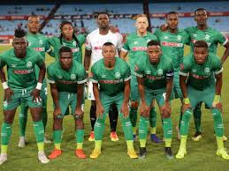

Our fanse are here
Click for The our best football player in history
See our Stadium
The magic of african football from Zimbabwe
The most famous football team from the country is
Amazulu FC. The football club based in Bulawayo, Zimbabwe. The club played in the Zimbabwe Premier Soccer League.
The team was founded in 1996 and has the most brilliant fans of the region.
In 2003 the team has won the Zimbabwe Premier Soccer League.